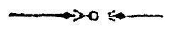

श्रीमन्महा माहेश्वराचार्याभिनवगुप्तविरचिते
श्रीजयरथकृतविवेकाव्यटीकोपेते
अथ
श्रीतन्त्रालोके

श्रीमन्महा माहेश्वराचार्याभिनवगुप्तविरचिते
श्रीजयरथकृतविवेकाव्यटीकोपेते

सप्तममाह्निकम् ।

तत्तन्मन्त्राभ्युदय-
प्रगुणीकृतचण्ड भैरवावेशः ।
विद्रावितभवमुद्रो
द्रढयतु भद्राणि जयरुद्रः ॥
इदानीं कालतत्त्वानुषक्तमेव द्वितीयार्धेन
चक्रोदयं वक्तुमुपक्रमते
अथ परमरहस्योऽयं
चक्राणां भण्यतेऽभ्युदयः ॥ १॥
चक्राणामिति मन्त्राद्यात्मनाम् ॥ १ ॥